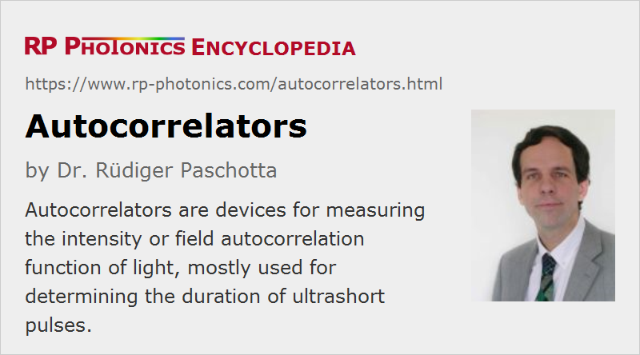

Autocorrelators
Definition: devices for measuring the intensity or field autocorrelation function of light, mostly used for determining the duration of ultrashort pulses
More general terms: optical metrology instruments, pulse characterization instruments
German: Autokorrelatoren
Categories: photonic devices, light detection and characterization, optical metrology, light pulses
How to cite the article; suggest additional literature
Author: Dr. Rüdiger Paschotta
Optical autocorrelators are used for various purposes, in particular for the detailed analysis of light, in particular for the measurement of the duration of ultrashort pulses with picosecond or femtosecond durations, where an electronic apparatus (based on, e.g., a photodiode) would be too slow.
The basic principle of operation of an autocorrelator for a pulse duration measurement is to check the correlation of the temporal pulse trace with itself; it is explained in the following. A beam splitter creates two copies of the incoming pulses. These copies are superimposed in a nonlinear medium, where they interact on the basis of some nonlinearity, provided that they overlap temporarily.
This article does not treat devices with an interferometer but no nonlinear crystal, as can be used to measure the optical spectrum of a source; for such things, see the article on Fourier transform spectroscopy. In that context, one uses autocorrelations of optical amplitudes, rather than of powers.
Autocorrelators should not be confused with autocollimators, which have a completely different purpose.
Intensity Autocorrelators
In an intensity autocorrelator as shown in Figure 1, a beam splitter splits an incoming pulse into two pulses, which are then focused and sent into a crystal with a χ(2) nonlinearity. The arm length difference and thus the relative timing of the pulses can be mechanically adjusted via the variable optical delay line. (Different kinds of delay lines are used, e.g. using rotating glass blocks or mirrors mounted on loudspeakers.) If the arm length difference is made small, so that the pulses meet in the nonlinear crystal, the process of sum frequency generation occurs, leading to an output with a shorter wavelength. If the relative time delay is increased, so that the overlap of the two pulses in the crystal is reduced, the mixing product becomes weaker. Obviously, that overlap is lost sooner if the pulses are rather short.
For measuring the pulse duration, the power of the mixing product is recorded as a function of the arm length difference. This can be done under computer control, using a motorized translation stage to move the delay line, or simply a loudspeaker moving a corner cube prism. The dependence of the autocorrelation signal on the temporal delay is given by
Figure 2 shows the autocorrelation signal for sech2-shaped pulses. The horizontal axis shows the time delay as calculated from the arm length difference.
For sech2-shaped pulses, the pulse duration is ≈ 0.65 times the width of the autocorrelation signal, but this conversion factor depends on the pulse shape. A rough evaluation is often based on some assumption concerning the pulse shape. Fitting the recorded autocorrelation with a theoretical curve for that assumed pulse shape provides a kind of sanity check, but not a strict one. In this context, note that the autocorrelation is e.g. always symmetric with respect to its center, even for asymmetric pulse shapes. However, asymmetric autocorrelation shapes can be obtained from misaligned autocorrelators.
Note that very short pulse durations can be measured without requiring a fast photodetector: the detector only has to measure an average power (assuming that a regular pulse train is sent into the autocorrelator), rather than resolving the power variations of the pulses.
For very short pulse durations (e.g. < 20 fs), various difficulties arise: the beam splitter may have a limited bandwidth, and its substrate and the other optical elements introduce chromatic dispersion. Furthermore, a geometric smearing effect leads to a too long measured pulse duration, if the beam angles are too steep, and group velocity mismatch can restrict the phase-matching bandwidth. Very thin nonlinear crystals are used in that domain, sometimes with a thickness less than 10 μm.
A collinear setup for intensity autocorrelation measurements can exploit type II phase matching in the crystal. The two pulse copies then have different polarization directions, rather than different propagation directions. In that way, the mentioned geometric smearing effect is avoided.
The intensity autocorrelation is called background-free, since the signal vanishes for large time delays. This is different for interferometric autocorrelators, as discussed below.
In most cases, an autocorrelation trace requires many different pulses from a regular pulse trains, since at least one pulse is required for every time delay setting. However, it is also possible to measure a whole autocorrelation trace with a single pulse, if this has a sufficiently high pulse energy. In a single-shot autocorrelator, the focusing into the nonlinear crystal is done with a cylindrical (rather than spherical) lens, and the converted signal is recorded with a camera. Different spatial positions in the crystal then correspond to different time delays.
Interferometric Autocorrelators
The setup of an interferometric autocorrelator (Figure 3) contains a Michelson interferometer with a variable arm length difference. The superimposed copies of the pulse are collinearly propagating into the nonlinear crystal (after focusing with a lens or curved laser mirror) and have the same polarization.
An interferometric autocorrelation is obtained by recording the average power of the frequency-doubled signal:
where the integration is over the temporal range corresponding to one pulse. This kind of autocorrelation trace exhibits a fast oscillation with a period of half the optical wavelength. The maximum signal (Figure 4) is obtained when the two pulses after the beam splitter undergo perfect constructive interference, leading to twice the amplitude compared with a single pulse, and thus four times the intensity, and after frequency doubling 16 times the intensity. For a large arm length difference, the pulses do not overlap in the nonlinear crystal, and the intensity is only twice that generated by a single pulse. Hence the peak signal is always eight times higher than the background, provided that the interferometer is properly aligned.
The interferometric autocorrelation is sensitive to chirps and thus in principle makes it possible to extract more information on the pulses. However, the pulse duration of a chirped pulse is underestimated if one simply uses the width of the autocorrelation signal (see Figure 5). An improved method called modified-spectrum autointerferometric correlation (MOSAIC) [15] is based on an interferometric autocorrelation, which is numerically post-processed such that the resulting trace makes it much easier to diagnose a chirp.
For relatively long pulses, the many oscillations of the interferometric autocorrelation trace can be averaged out. In that case, the peak signal is three times the background (not four times, due to the non-sinusoidal oscillation).
Owing to its simpler setup, interferometric autocorrelators are more suitable than intensity autocorrelators for measuring very small (few-femtosecond) pulse durations. In particular, the above-mentioned geometric effect is avoided. However, other methods of pulse characterization (e.g. FROG or SPIDER) are more precise in the regime below 10 fs.
Choice of Nonlinear Crystal and Phase Matching
The choice of a suitable nonlinear crystal and the crystal thickness involves various considerations e.g. concerning phase matching. In the femtosecond regime, the group velocity mismatch is also particularly important, potentially limiting the temporal resolution. Thin KDP crystals are a good choice for pulse durations down to a few femtoseconds. Lithium iodate (LiIO3) is also often used due to its particularly wide phase-matching bandwidth.
It can be advantageous to use a crystal with type-II phase matching, because it is then easier to achieve a high dynamic range (see below).
Autocorrelators Based on Two-photon Absorption
Particularly compact and simple autocorrelators can be constructed using photodiodes with large band gap materials, where only two-photon absorption in the photodiode contributes to the photocurrent, whereas there is no linear response due to the too small photon energy. Such two-photon detectors sometimes allow for a very wide optical measurement bandwidth.
Autocorrelators with High Dynamic Range
In some cases, it is desirable to measure autocorrelations with a particularly high dynamic range, so that one can detect even rather weak pedestals of a pulse, or side peaks which may e.g. be caused by parasitic reflections. (Mode-locked fiber lasers have a particular tendency to produce such features.) For that purpose, special high dynamic range autocorrelators have been developed. One may, for example, use a background-free intensity autocorrelator based on a type-II phase-matched crystal, where there is no upconverted signal outside the region of temporal overlap. Also, one may use a setup where the two input beams to the nonlinear crystal are modulated with a two-frequency optical chopper. The autocorrelation signal then has frequency components at the sum and the difference of the two modulation frequencies, and can be processed with a lock-in amplifier [8].
Another possibility is to use a third-order autocorrelator, using sum frequency generation of the laser light with a frequency-doubled component [7, 18]. Such a device can also reveal asymmetric features, such as pedestals of different height before and after the pulse.
The detectors are often photomultipliers because of their particularly low noise equivalent power.
For sufficiently high pulse energies, the dynamic range achieved with such techniques can be 80 dB or even 100 dB, although oft not in combination with highest temporal resolution. (Longer nonlinear crystals provide stronger signals and thus a higher dynamic range, but also limit the temporal resolution by introducing a group velocity mismatch.) Some mode-locked lasers exhibit no pedestals even in that large range, while others have substantial pedestals which are then easily seen.
Limitations of the Autocorrelation Method; The Coherent Artifact
From a measured autocorrelation trace, one can well retrieve the pulse duration if the pulse shape is known, and also check whether the autocorrelation trace is consistent with a given pulse shape. However, one can not uniquely measure the pulse shape with an autocorrelation trace alone. The primary reason is that the autocorrelation trace is always symmetric, even for asymmetric pulse shapes. Further problems arise if pulse trains are subject to noise; autocorrelation traces can then be quite misleading.
Further, the frequently used intensity autocorrelation technique cannot provide information on the phase profile; the obtained autocorrelation traces depend only on the temporal variation of optical intensity or power.
For very short pulses, e.g. with durations below 10 fs, accurate autocorrelation measurements are difficult to perform. One challenge is the limited phase-matching bandwidth of the nonlinear crystal, even if that is made very thin. Frequency-resolved optical gating (FROG) and spectral phase interferometry (SPIDER) have found to be more accurate in that domain, while also providing valuable phase information.
For pulses exhibiting strongly distorted temporal shapes, as can occur e.g. for a not properly working mode-locked laser, one can obtain an autocorrelation trace which exhibits a narrow feature – called a coherent artifact on top of a much broader structure. In such situations, it is wrong just to take the coherent artifact as a measure for the pulse duration and ignore the broad background [2]. In fact, the autocorrelation trace then coveys little information on the actual pulse shape. More comprehensive pulse characterization can then be achieved with frequency-resolved optical gating.
Suppliers
The RP Photonics Buyer's Guide contains 19 suppliers for autocorrelators. Among them:
Questions and Comments from Users
Here you can submit questions and comments. As far as they get accepted by the author, they will appear above this paragraph together with the author’s answer. The author will decide on acceptance based on certain criteria. Essentially, the issue must be of sufficiently broad interest.
Please do not enter personal data here; we would otherwise delete it soon. (See also our privacy declaration.) If you wish to receive personal feedback or consultancy from the author, please contact him e.g. via e-mail.
By submitting the information, you give your consent to the potential publication of your inputs on our website according to our rules. (If you later retract your consent, we will delete those inputs.) As your inputs are first reviewed by the author, they may be published with some delay.
Bibliography
| [1] | J. A. Armstrong, “Measurement of picosecond laser pulse widths”, Appl. Phys. Lett. 10 (1), 16 (1967), doi:10.1063/1.1754787 |
| [2] | R. A. Fisher and J. A. Fleck Jr, “On the phase characteristics and compression of picosecond pulses”, Appl. Phys. Lett. 15, 287 (1969), doi:10.1063/1.1653002 |
| [3] | K. Sala et al., “CW autocorrelation measurements of picosecond laser pulses”, IEEE J. Quantum Electron.16 (9), 990 (1980), doi:10.1109/JQE.1980.1070606 |
| [4] | R. K. Jain et al., “Simple distortion-free real-time optical pulse correlator”, Appl. Opt. 21 (22), 4073 (1982), doi:10.1364/AO.21.004073 |
| [5] | A. M. Weiner, “Effect of group velocity mismatch on the measurement of ultrashort optical pulses via second harmonic generation”, IEEE J. Quantum Electron.19 (8), 1276 (1983), doi:10.1109/JQE.1983.1072036 |
| [6] | G. Xinan et al., “Fast-scanning autocorrelator with 1-ns scanning range for characterization of mode-locked ion lasers”, Rev. Sci. Instrum. 59 (9), 2088 (1988), doi:10.1063/1.1140032 |
| [7] | S. Luan et al., “High dynamic range third-order correlation measurement of picosecond laser pulse shapes”, Meas. Sci. Technol. 4, 1426 (1993) |
| [8] | A. Braun et al., “Characterization of short-pulse oscillators by means of a high-dynamic-range autocorrelation measurement”, Opt. Lett. 20 (5), 1889 (1995), doi:10.1364/OL.20.001889 |
| [9] | B. M. van Oerle and G. J. Ernst, “Autocorrelation measurements of bursts of picosecond pulses”, Appl. Opt. 35 (25), 5177 (1996), doi:10.1364/AO.35.005177 |
| [10] | L. P. Barry et al., “Autocorrelation of ultrashort pulses at 1.5 μm based on nonlinear response of silicon photodiodes”, Electron. Lett. 32 (20), 1922 (1996), doi:10.1049/el:19961251 |
| [11] | I. D. Jung et al., “High-dynamic-range characterization of ultrashort pulses”, Appl. Phys. B 65, 307 (1997), doi:10.1007/s003400050277 |
| [12] | D. T. Reid et al., “Light-emitting diodes as measurement devices for femtosecond laser pulses”, Opt. Lett. 22 (4), 233 (1997), doi:10.1364/OL.22.000233 |
| [13] | D. M. Riffe and A. J. Sabbah, “A compact rotating-mirror autocorrelator design for femtosecond and picosecond laser pulses”, Rev. Sci. Instrum. 69 (9), 3099 (1998), doi:10.1063/1.1149065 |
| [14] | A. Gutierrez et al., “Autocorrelation measurement of femtosecond laser pulses by use of a ZnSe two-photon detector array”, Opt. Lett. 24 (16), 1175 (1999), doi:10.1364/OL.24.001175 |
| [15] | T. Hirayama and M. Sheik-Bahae, “Real-time chirp diagnostic for ultrashort laser pulses”, Opt. Lett. 27 (10), 860 (2002), doi:10.1364/OL.27.000860 |
| [16] | E. Power et al., “All-reflective high fringe contrast autocorrelator for measurement of ultrabroadband optical pulses”, Opt. Lett. 31 (23), 3514 (2006), doi:10.1364/OL.31.003514 |
| [17] | F. Quercioli, “Autocorrelator designs for nonlinear optical microscopy”, Opt. Eng. 45 (6), 064303 (2006), doi:10.1117/1.2215379 |
| [18] | N. Stuart et al., “Comparative study on the temporal contrast of femtosecond mode-locked laser oscillators”, Opt. Lett. 41 (14), 3221 (2016), doi:10.1364/OL.41.003221 |
See also: pulses, ultrashort pulses, pulse duration, pulse characterization
and other articles in the categories photonic devices, light detection and characterization, optical metrology, light pulses
|  |
If you like this page, please share the link with your friends and colleagues, e.g. via social media:
These sharing buttons are implemented in a privacy-friendly way!